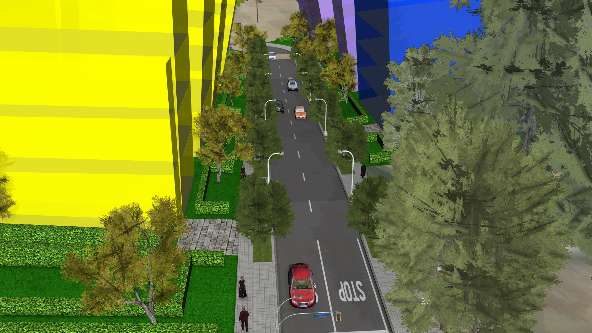
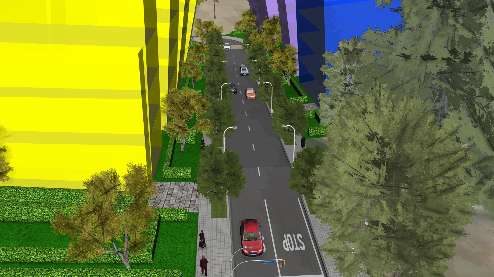
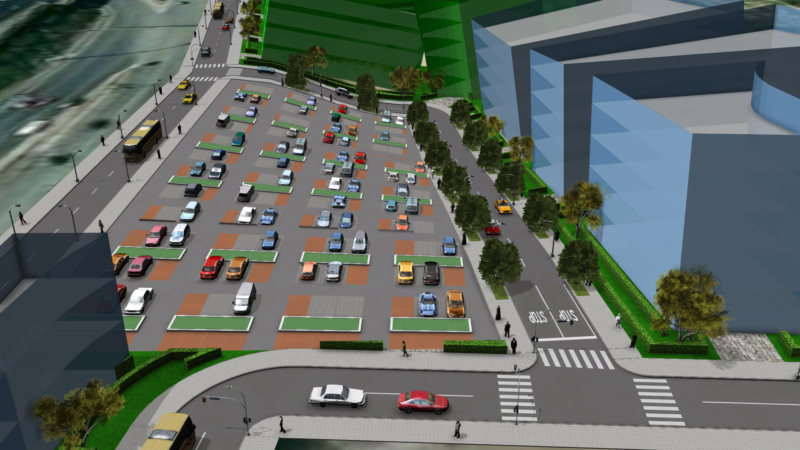
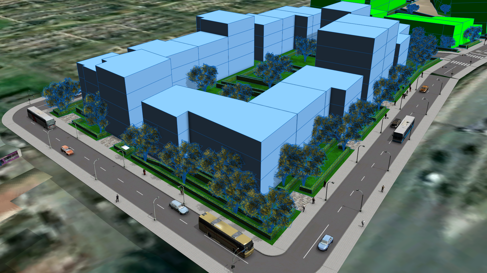
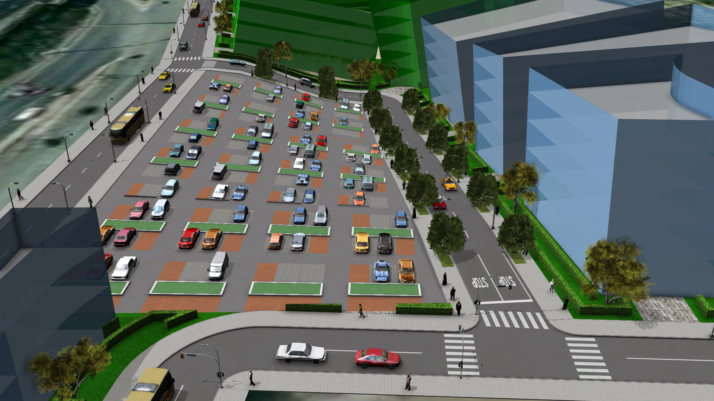
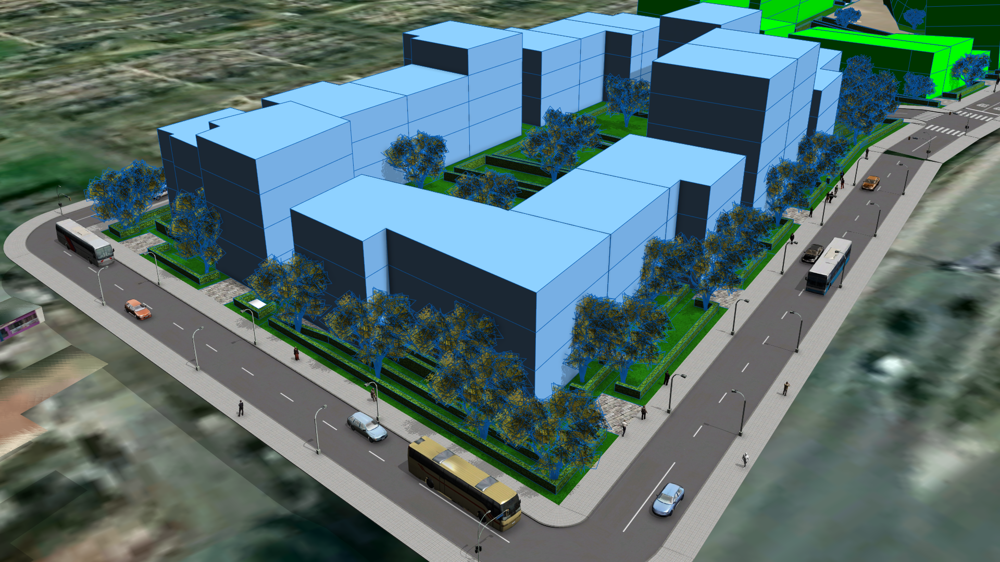

Contexte
Le sujet
Reconversion d’une friche potentielle en projet de développement et d’aménagement durable à vocation principale d’habitat
La Région Île-de-France recense des friches potentielles afin de développer sur les emprises disponibles des
projets d’habitat, de renaturation, de reconversion industrielle, de fermes biologiques, etc.
Le but du projet est de classer les friches de la ville de Choisy-le-Roi pour ensuite proposer une idée d'amménagement
sur une des friches.
Situation Géographique
Notre étude de friches se déroule à Choisy-le-Roi (94).
Les objectifs
À partir de l’extrait de la base données des sites potentiellement mutables et des bases de données fournies, nous allons cibler le site le plus approprié à un projet d’habitat. Puis modéliser en 3D le projet de logement dans le tissu urbain existant. Présenter le projet dans un document en expliquant les raisons du choix de l’emprise sélectionnée.
Pour ce faire, Nous disposons des outils suivants : Cityengine, SketchUp, Google Earth, ArcgisPro, ArcgisOnline, Lumion
Les rendus demandés sont les suivants : Images, fichiers sources (dossier de géotraitement et BD finale), pdf des fiches détaillées,
Les friches potentielles
Pour commencer, nous avons affiché les 11 friches initiales sur ArcGIS Online afin de commencer nos traitements.
Une fois nos 11 friches récupérées, nous les avons classées en fonction de nombreux critères positifs comme négatifs. (Voir tableau ci-dessous)

Voici ci-dessous le pdf regroupement toutes les friches avec leurs réponses aux différents indicatifs.
Friche retenue
Critères de sélection
Nous devions initialement classer les friches pour pouvoir choisir la plus adéquate, mais par manque de temps nous avons choisi "au feeling".
J'ai choisi la friche "Marathon1_113" pour sa taille et sa proximité à l'autoroute:

J'ai ensuite réalisé différents scénarios sur cette friche.
Scénario n°1 : Zone mixte
Explications des modifications
Pour ce premier scénario, j'ai opté pour une zone d'habitat mixte avec des bureaux, des commerces, des logements collectifs et individuels un gymnase et un hôpital.Rendus modélisation
Voici ci-dessous un slider avec différents points de vue (appuyer sur les points si cela ne fonctionne pas)
 

Scénario n°2 : Quartier Universitaire
Explications des modifications
Pour ce second scénario j'ai réalisé une "ville étudiante".
Cette cité étudiante comprend:
- Une université (en bleu)
- Un parking
- Un îlot de logement étudiants (en gris)
- Un îlot de logements individuels (en vert)
Rendus modélisation
Voici ci-dessous un slider avec différents points de vue (appuyer sur les points si cela ne fonctionne pas)
 


